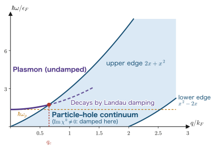

Chapter 11Plasma Oscillations and Zero Sound
In Chapter 1 we listed three things that make response functions interesting. The second of them was “the poles of $\chi(\omega)$ tell us about the collective excitations of the system.” This chapter is the one that keeps that promise.
In Chapter 9 we defined the dielectric function $\epsilon(\qq,\omega)=1-v(q)\chi^0(\qq,\omega)$, and in Chapter 10 we computed its content, the Lindhard function. Up to that point the story was a passive one: how the electron gas screens a charge brought in from outside. Yet the same $\epsilon$ has another face. If $\epsilon(\qq,\omega)=0$ at some $(\qq,\omega)$, then there the electron gas can oscillate by itself even in the absence of an external field. This is a collective excitation, and in metals it appears as the plasma oscillation (plasmon), in which all the electrons sway in unison. Its frequency is fixed by the single formula $\omega_p=\sqrt{4\pi ne^2/m}$; for aluminum the free-electron-model value is $\hbar\omega_p\simeq15.8\ \mathrm{eV}$, which agrees well with the value $15.0\ \mathrm{eV}$ measured by electron energy-loss spectroscopy (EELS). These are numbers that anyone can check.
In the second half we redo the same calculation for a system of uncharged fermions (liquid $^3$He). When a short-range repulsion takes the place of the long-range Coulomb force, the collective mode becomes a sound wave. This is the zero sound predicted by Landau, and the mechanism by which it propagates is utterly different from that of ordinary sound (first sound). Look at how two entirely different pieces of physics emerge from the same single sentence, “the denominator is zero.”
- The difference between particle–hole excitations (single-particle excitations) and collective excitations—a continuous spectrum versus one sharp line
- Why $\epsilon(\qq,\omega)=0$ is the condition for a collective mode, and the fact that it has the same structure as the resonance of Chapter 3 (denominator zero)
- Two derivations of $\omega_p=\sqrt{4\pi ne^2/m}$ (from linear response theory and from classical electromagnetism) and their agreement
- Working out actual numerical values of $\hbar\omega_p$ for Na, Mg, Al, Cu, and Ag and comparing them with the measured values
- A complete derivation of the dispersion relation $\omega(q)=\omega_p\left(1+\frac{3}{10}\frac{q^2v_F^2}{\omega_p^2}+\cdots\right)$
- Landau damping—the mechanism by which electrons running at the same speed as the wave carry energy away—and the critical wave number $q_c$
- EELS, the surface plasmon $\omega_s=\omega_p/\sqrt2$, and the color of gold nanoparticles (localized surface plasmon resonance)
- Derivation of the dispersion equation of zero sound, $1=\frac{F_0}{2}\left[s\ln\frac{s+1}{s-1}-2\right]$, and how it differs from first sound
11.1 What Is a Collective Excitation?
The ground state of the free-electron gas at absolute zero is the state in which the Fermi sphere $\abs{\kk}\le k_F$ is completely filled. There are two broad ways to give it energy $\hbar\omega$ and momentum $\hbar\qq$.
Particle–hole excitation (single-particle excitation)
Kick one electron inside the Fermi sphere out of its state, $\kk\to\kk+\qq$. The energy required is
$$ \begin{equation} \hbar\omega=\epsilon_{\kk+\qq}-\epsilon_{\kk}=\frac{\hbar^2}{2m}\left(2\kk\cdot\qq+q^2\right) \label{eq:11-ph} \end{equation} $$Even if $\qq$ is fixed, there are countless ways to choose $\kk$, so $\hbar\omega$ ranges over a continuous band. This is called the particle–hole continuum.
Collective excitation
A mode in which, rather than kicking one particular electron, all the electrons move a little, in phase with one another. What binds them together is the Coulomb interaction. In this case, once $\qq$ is fixed, $\omega$ is determined uniquely. The spectrum is not a continuous band but one sharp line.
Derivation: The upper and lower limits of the particle–hole continuum
We find the boundaries now so that we can draw a figure later. Write Eq. \eqref{eq:11-ph} as $\hbar\omega=\frac{\hbar^2}{2m}(2kq\mu+q^2)$ ($\mu=\cos\theta$ is the cosine of the angle between $\kk$ and $\qq$). The state $\kk$ must lie inside the Fermi sphere ($k\le k_F$), and $\kk+\qq$ must lie outside it.
Upper limit. Taking $k$ maximal ($k=k_F$) and $\mu$ maximal ($\mu=1$), we obtain
$$ \begin{equation} \hbar\omega_+(q)=\frac{\hbar^2}{2m}\left(2k_Fq+q^2\right)=\hbar v_F q+\frac{\hbar^2q^2}{2m} \label{eq:11-upper} \end{equation} $$Here we used $v_F=\hbar k_F/m$. The first term is the contribution of “kicking an electron on the Fermi surface in the same direction as the wave,” and the second term is the recoil.
Lower limit. For $q<2k_F$, an electron just inside the Fermi surface can be moved to just outside it, so the energy difference can be made arbitrarily small, and the lower limit is $\omega=0$. For $q>2k_F$, $\abs{\kk+\qq}>k_F$ holds automatically whichever $\kk$ we start from, so $\mu=-1$, $k=k_F$ gives the minimum, and
$$ \begin{equation} \hbar\omega_-(q)=\frac{\hbar^2q^2}{2m}-\hbar v_F q \qquad (q>2k_F) \label{eq:11-lower} \end{equation} $$∎ In dimensionless form it is simple: with $x\equiv q/k_F$, $\epsilon_F=\hbar^2k_F^2/2m$, and $\hbar v_Fk_F=2\epsilon_F$, we have $\hbar\omega_\pm/\epsilon_F=x^2\pm2x$. At $x=2$ the lower limit lifts off from $0$. This $2k_F$ is the same $2k_F$ that appeared in the Friedel oscillations of Chapter 10. Note also that in Chapter 10 the dimensionless wave number was taken to be $x=q/2k_F$, whereas in this chapter it is $x=q/k_F$. The symbol is the same but the definitions differ by a factor of two, so be careful when you place the equations of the two chapters side by side.
11.2 Why Does $\epsilon(\qq,\omega)=0$ Give a Collective Mode?
First, let us recall the main points of the RPA from Chapter 9. The electrons respond to the total potential (external plus induced): $\delta n=\chi^0\phi_{\text{tot}}$. On the other hand, the induced density $\delta n$ itself creates a Coulomb potential $v(q)\delta n$ (with $v(q)=4\pi e^2/q^2$). Therefore $\phi_{\text{tot}}=\phi_{\text{ext}}+v(q)\chi^0\phi_{\text{tot}}$, and solving for $\phi_{\text{tot}}$ gives
Why does $\epsilon=0$ mean “oscillation without an external field”?
We rewrite Eq. \eqref{eq:11-eps} as $\epsilon(\qq,\omega)\,\phi_{\text{tot}}=\phi_{\text{ext}}$. Now we switch off the external field ($\phi_{\text{ext}}=0$). Ordinarily this gives $\phi_{\text{tot}}=0$ and nothing happens. At the special values of $(\qq,\omega)$ where $\epsilon(\qq,\omega)=0$, however, $0\times\phi_{\text{tot}}=0$ holds regardless of the value of $\phi_{\text{tot}}$. That is, a solution with zero external field exists, with $\phi_{\text{tot}}$ remaining finite.
This is nothing other than the state in which “the system oscillates on its own although no one is kicking it”—that is, a normal mode. Saying the same thing from the side of $\chi=\chi^0/\epsilon$, $\epsilon=0$ is a pole of the response function $\chi$. The statement “the poles of the response function tell us about the collective excitations,” which was announced in Chapter 1, Section 1.6, has now taken a concrete form.
Exactly the same structure as the resonance in Chapter 3
The response function of the forced oscillator in Chapter 3, $\chi(\omega)=\left[m(\omega_0^2-\omega^2)+\ii\gamma\omega\right]^{-1}$, likewise reads $\left[m(\omega_0^2-\omega^2)+\ii\gamma\omega\right]x(\omega)=F(\omega)$ if we move the denominator to the left-hand side. In the frictionless limit $\gamma\to0$, the denominator vanishes at $\omega=\pm\omega_0$, and there a solution with $x\neq0$ exists even for $F=0$—that is free oscillation. The condition $\epsilon(\qq,\omega)=0$ of the electron gas is the many-body version of this $m(\omega_0^2-\omega^2)=0$.
Derivation: The damping rate $\Gamma_q$ for weak damping
Since $\epsilon$ is in general a complex number, the solution $\omega=\omega_q-\ii\Gamma_q/2$ of $\epsilon=0$ is also complex. The time dependence is $\ee^{-\ii\omega t}=\ee^{-\ii\omega_q t}\ee^{-\Gamma_q t/2}$. Here the time for the amplitude to fall to $1/\ee$ is $2/\Gamma_q$, while the time for the intensity (the square of the amplitude) to fall to $1/\ee$ is $1/\Gamma_q$; the two differ by a factor of 2. In this chapter we adopt the latter, and call $\Gamma_q$ the damping rate and $1/\Gamma_q$ the lifetime. With this definition, $\Gamma_q$ is the quantity corresponding to the full width at half maximum (FWHM) of the resonance peak (the same structure as the damped oscillator of Chapter 2; note, however, that $\Gamma=\gamma/2m$ in Chapter 2 was defined as the damping rate of the amplitude, so the two differ by a factor of 2).
Suppose that $\mathrm{Im}\,\epsilon$ is small. First we determine $\omega_q$ satisfying $\mathrm{Re}\,\epsilon(\qq,\omega_q)=0$ on the real axis, and expand $\epsilon$ about $\omega_q$ to first order in $\Gamma_q$:
$$ \epsilon\!\left(\qq,\omega_q-\tfrac{\ii\Gamma_q}{2}\right) \simeq \underbrace{\mathrm{Re}\,\epsilon(\qq,\omega_q)}_{=0} +\ii\,\mathrm{Im}\,\epsilon(\qq,\omega_q) -\frac{\ii\Gamma_q}{2}\left.\frac{\partial\,\mathrm{Re}\,\epsilon}{\partial\omega}\right|_{\omega_q}=0 $$Comparing the imaginary parts (we drop the $\omega$-derivative of $\mathrm{Im}\,\epsilon$ because it is a second-order small quantity), we obtain
∎ The numerator is proportional to $\mathrm{Im}\,\epsilon$. Therefore, in a region where $\mathrm{Im}\,\epsilon=0$ the plasmon does not decay. This fact is the starting point of Section 11.5.
Common Misconception: Why can't plasmons be seen with light?
The $\epsilon(\qq,\omega)$ of this chapter is the longitudinal dielectric function, and the plasmon given by $\epsilon=0$ is also a longitudinal-wave mode (the electric field is parallel to $\qq$). Light, however, is a transverse wave, and its dispersion relation in matter is $\epsilon_T=c^2q^2/\omega^2$, not $\epsilon=0$. Therefore simply shining light on a material cannot excite bulk plasmons. It suffices to fire fast electrons into it—since the field of a moving point charge has a longitudinal component. This is the EELS of Section 11.6. Conversely, at surfaces and in small particles the boundary conditions mix the longitudinal and transverse components, so light can excite plasmons there too, and gold nanoparticles become colored.
11.3 Derivation of the Plasma Frequency — Two Routes
11.3.1 Derivation from linear response theory
Derivation: $\chi^0\to nq^2/m\omega^2$ (rechecking the result of Chapter 10)
The Lindhard function (including the spin factor 2, with $\eta\to0^+$) is
$$ \begin{equation} \chi^0(\qq,\omega)=\frac{2}{V}\sum_{\kk}\frac{n_\kk-n_{\kk+\qq}}{\hbar\omega-(\epsilon_{\kk+\qq}-\epsilon_\kk)+\ii\eta} \label{eq:11-lindhard} \end{equation} $$Step 1: Splitting the sum in two. We separate the numerator into the $n_\kk$ term and the $n_{\kk+\qq}$ term.
Step 2: Shifting the summation variable in the second term. We replace $\kk\to\kk-\qq$ (this translation is allowed because the sum runs over all of $\kk$ space). The denominator of the second term then becomes $\hbar\omega-(\epsilon_{\kk}-\epsilon_{\kk-\qq})$, so that
$$ \chi^0=\frac{2}{V}\sum_{\kk}n_\kk\left[\frac{1}{\hbar\omega-(\epsilon_{\kk+\qq}-\epsilon_\kk)}-\frac{1}{\hbar\omega-(\epsilon_{\kk}-\epsilon_{\kk-\qq})}\right] $$Step 3: Bringing to a common denominator. Defining the symbols $a\equiv\dfrac{\hbar^2\kk\cdot\qq}{m}=\hbar\,\qq\cdot\bm{v}_\kk$ and $b\equiv\dfrac{\hbar^2q^2}{2m}$, we have $\epsilon_{\kk+\qq}-\epsilon_\kk=\frac{\hbar^2}{2m}(2\kk\cdot\qq+q^2)=a+b$ and $\epsilon_{\kk}-\epsilon_{\kk-\qq}=\frac{\hbar^2}{2m}(2\kk\cdot\qq-q^2)=a-b$. Hence
$$ \chi^0=\frac{2}{V}\sum_{\kk}n_\kk\left[\frac{1}{\hbar\omega-a-b}-\frac{1}{\hbar\omega-a+b}\right] =\frac{2}{V}\sum_{\kk}n_\kk\,\frac{(\hbar\omega-a+b)-(\hbar\omega-a-b)}{(\hbar\omega-a)^2-b^2} $$The numerator is $2b=\hbar^2q^2/m$. Pulling this out of the sum and dividing the denominator by $\hbar^2$, we obtain
No approximation has been made up to this point. Step 4: Taking the limit. If $\omega$ is much larger than both $qv_F$ and $\hbar q^2/2m$, the denominator simply becomes $\omega^2$, and since $\frac{2}{V}\sum_\kk n_\kk=n$,
∎
Derivation: The plasma frequency
We substitute Eq. \eqref{eq:11-chi0-hf} into $\epsilon=1-v(q)\chi^0$. Since $v(q)=4\pi e^2/q^2$,
$$ \epsilon(\qq,\omega)=1-\frac{4\pi e^2}{q^2}\cdot\frac{nq^2}{m\omega^2} $$The factors of $q^2$ cancel neatly. This is the key to the whole story of the plasmon:
Setting $\epsilon=0$ gives $\omega^2=\omega_p^2$, that is,
∎
What the cancellation of $q^2$ means
$\chi^0$ carried a factor of $q^2$ (a consequence of the charge conservation law; it expresses the fact that no density fluctuation can be created as $q\to0$). On the other hand, the Coulomb interaction $v(q)=4\pi e^2/q^2$ had a divergence $q^{-2}$. These two cancel exactly.
As a result, $\omega_p$ is a finite value independent of $q$. Ordinarily, long-wavelength modes (sound waves, phonons) have $\omega\to0$, but the plasmon retains a finite gap $\hbar\omega_p$ even as $q\to0$. It is precisely because the Coulomb force is long-range that a gap opens in the collective mode. When we treat the case of a short-range force in Section 11.7, we will find a sound wave with $\omega\propto q$. This contrast is the backbone of this chapter.
Advice from Prof. Takao Kotani: Goldstone's theorem and how the Coulomb force breaks it
There is a more general background to the “opening of a gap” just described. The statement that in a state where a continuous symmetry is spontaneously broken there appears a gapless collective mode (the Nambu–Goldstone mode) with $\omega\to0$ as $q\to0$ is Goldstone's theorem. Typical examples are the acoustic phonons in a crystal (breaking of translational symmetry) and the phase mode of a superfluid (the zero sound treated in Section 11.7 is a collective mode of a Fermi liquid that does not involve symmetry breaking, so it is not itself a Nambu–Goldstone mode, but it shares with these modes the feature that no gap opens because the interaction is short-range). The proof of this theorem, however, presupposes that the interaction is short-range (locality), and the long-range Coulomb force $1/r$ falls outside that premise. Hence in charged systems the theorem breaks down, and a gap with $\omega\to\omega_p>0$ remains even as $q\to0$. What is responsible for this in the equations is the $q\to0$ divergence of $v(q)=4\pi e^2/q^2$, which exactly cancels $\chi^0\propto q^2$ and makes $\omega_p$ independent of $q$—this is nothing other than the calculation we saw above.
That this view is correct can be verified immediately by replacing the interaction with the screened form $e^2\ee^{-\kappa r}/r$. Its Fourier transform is $v_\kappa(q)=4\pi e^2/(q^2+\kappa^2)$, which stays at the finite value $4\pi e^2/\kappa^2$ even as $q\to0$. Putting this into $1-v_\kappa(q)\chi^0=0$ and using $\chi^0\to nq^2/m\omega^2$ (Eq. \eqref{eq:11-chi0-hf}), we obtain
$$ \omega^2=\omega_p^2\,\frac{q^2}{q^2+\kappa^2}, \qquad\text{therefore, for } q\ll\kappa \text{ we have } \omega\simeq\frac{\omega_p}{\kappa}\,q $$so the gap disappears and we return to a sound-wave-like mode with $\omega\propto q$. This confirms that the long-range nature was indeed the cause of the gap. If we insert the Thomas–Fermi screening of Chapter 10, $\kappa=q_{TF}$ (with $q_{TF}^2=4\pi e^2N(0)$), the sound speed becomes $\omega_p/q_{TF}=\sqrt{n/\left[mN(0)\right]}=v_F/\sqrt{3}$, and in having $\omega\propto q$ it stands on exactly the same ground as the zero sound of Section 11.7 (note, however, that since $s=\omega/qv_F=1/\sqrt{3}<1$, the mode in this limit is strongly subject to the Landau damping of Section 11.5. For it to survive as a sharp mode we need $\kappa<\omega_p/v_F$).
What is easy to get wrong here is the following point: in a real metal screening is at work, and yet the plasmon has a gap. The screening in a metal is a result of the collective response that $\epsilon(\qq,\omega)$ itself describes; it is not something to be pushed into $v(q)$ beforehand. What drives the collective motion is, after all, the bare Coulomb interaction $4\pi e^2/q^2$, and one must understand that the replacement by $\ee^{-\kappa r}/r$ is a thought experiment about “a different system in which screening is supplied from outside.”
—The above is based on advice received from Prof. Takao Kotani, the developer of the QSGW method (personal communication, August 2026).
Advanced Topic: Superconductivity and the Anderson–Higgs mechanism — Where did the Goldstone mode go?
The scenario we have just seen, “the long-range Coulomb interaction opens a gap,” works most vividly in superconductivity. This is also the place where Goldstone's theorem appears in its original form (spontaneous breaking of a continuous symmetry), so let us look at it in a little more detail.
1. First, let us switch off the charge—the Anderson–Bogoliubov mode. In the superconducting state, the condensate of Cooper pairs has a macroscopic wave function $\Psi=\abs{\Psi}\ee^{\ii\varphi}$, and its phase $\varphi$ picks a single value. This is the spontaneous breaking of the $U(1)$ symmetry. Since the symmetry is broken, Goldstone's theorem tells us that there must be a gapless collective mode that twists the phase slowly, and indeed in a neutral Fermi superfluid with the charge switched off (for example, superfluid $^3$He) a sound-wave-like mode appears with the dispersion
$$ \omega = \frac{v_F}{\sqrt3}\,q $$This mode is called the Anderson–Bogoliubov mode. The velocity $v_F/\sqrt3$ should look familiar—it is the same as the sound speed that appeared in the box above when we replaced the Coulomb interaction by $\ee^{-\kappa r}/r$ and set $\kappa=q_{TF}$. This is no coincidence: both come from the same quantity, “the compressibility of a Fermi gas with the long-range character removed.”
2. Restoring the charge lifts the mode up to $\omega_p$. But electrons carry charge. Twisting the phase in space makes the charge density fluctuate, and the long-range Coulomb interaction $v(q)=4\pi e^2/q^2$ acts on it. The calculation is the same as in this section: the divergence of $v(q)$ as $q\to0$ pushes up the sound-wave-like $\omega\propto q$, and the result is
$$ \omega(q\to0)\;\longrightarrow\;\omega_p $$The phase mode of a superconductor is not a gapless Goldstone mode; it becomes the plasmon itself. Exactly the same mechanism by which the plasmon acquired a gap in an ordinary metal is at work in a superconductor as well.
3. This is the Anderson–Higgs mechanism. Where did the vanished Goldstone mode go? The answer is that it was “eaten” by the gauge field. A massless photon has only two transverse components, but when it absorbs the phase mode it gains one longitudinal component, giving three components, and it acquires a mass. Note that the counting of degrees of freedom works out ($2+1=3$). It was in 1963 that P. W. Anderson showed this in the context of solid-state physics, and Higgs et al. put forward the same mechanism in particle physics the following year. The mechanism by which the $W$ and $Z$ bosons acquire mass is identical to the mechanism by which the photon becomes heavy inside a superconductor.
4. The photon becoming heavy is the Meissner effect. This is not abstract theory; it is the most famous property of superconductivity itself. A massive field can penetrate only exponentially, so the magnetic field is cut off at a depth $\lambda_L$ from the surface. That $\lambda_L$ is nothing other than the Compton wavelength $\hbar/(m_\gamma c)$ of the heavy photon. Using the fact that the photon mass is $m_\gamma=\hbar\omega_p/c^2$, we obtain
In fact, if we compare the definition of the London penetration depth, $\lambda_L^2=mc^2/(4\pi n e^2)$, with $\omega_p^2=4\pi ne^2/m$, we see that $\lambda_L=c/\omega_p$ is an identity. The plasma frequency and the magnetic penetration depth are two faces of one and the same quantity. Checking with aluminum, $\hbar\omega_p=15.8\ \mathrm{eV}$ gives $\lambda_L=c/\omega_p\simeq12.5\ \mathrm{nm}$, in good agreement with the measured $\sim16\ \mathrm{nm}$. For lead and niobium the measured value is several times larger, but this is due to the fact that not all the electrons condense ($n_s<n$) and to effective-mass and nonlocal effects; the mechanism itself is unchanged.
5. The “leftover” remains as the amplitude mode. Of the degrees of freedom associated with the broken symmetry, the phase $\varphi$ was “eaten” by the gauge field, but the fluctuation of the amplitude $\abs{\Psi}$ remains. This is the Higgs mode (amplitude mode), which appears at $\omega\simeq2\Delta$ in terms of the superconducting gap $\Delta$. Because it carries no charge, it is not pushed up by the Coulomb interaction and remains at the bottom of the gap. It has actually been observed in Raman scattering of $\mathrm{NbSe_2}$ and in experiments with strong excitation by terahertz light, and in recent years it has been studied extensively as “the Higgs particle in a solid.”
6. How this connects to the subject of this chapter. The discussion so far implies that the plasmon hardly changes even when the material becomes superconducting. This is because the energy scales are orders of magnitude different—in aluminum, $2\Delta\simeq0.36\ \mathrm{meV}$ against $\hbar\omega_p=15.8\ \mathrm{eV}$, a difference of fully a factor of 40,000 or more. Superconductivity occurs only in a thin shell very close to the Fermi surface, whereas the plasma oscillation, in which all the electrons sway in unison, is a high-energy phenomenon far beyond it. From the same condition $\epsilon(\qq,\omega)=0$, both the $\mathrm{meV}$ Higgs mode and the $\mathrm{eV}$ plasmon can be read off at the same time—this is the depth hidden in a single function, the dielectric function.
11.3.2 Derivation from classical electromagnetism
Derivation: Displacing the slab of electrons (Tonks–Langmuir, 1929)
Step 1: Setup. Consider a uniform electron gas. The positive ions form an immobile uniform background (jellium) with charge density $+ne$ (the electron charge is $-e$, $e>0$).
Step 2: Displacing all the electrons by $u$ in the $x$ direction. At the left end the electrons move away by $u$, so only the positive background remains in a layer of thickness $u$. Its surface charge density is $\sigma_+=(+ne)\times u=+neu$. At the right end, conversely, only electrons stick out, giving $\sigma_-=-neu$. These two surface charges form a parallel-plate capacitor.
Step 3: Finding the electric field. By Gauss's law, the electric field inside a parallel-plate capacitor with surface charge densities $\pm\sigma$ is (in Gaussian units)
$$ E=4\pi\sigma=4\pi n e u $$It points from the positive plate to the negative plate, that is, in the $+x$ direction.
Step 4: Equation of motion. The force on one electron is $F=(-e)E=-4\pi n e^2 u$. Since it is opposite to the displacement, it is indeed a restoring force, and the quantity corresponding to the spring constant is $k_{\text{eff}}=4\pi ne^2$.
$$ m\frac{\dd^2u}{\dd t^2}=-4\pi n e^2 u \qquad\Longrightarrow\qquad \frac{\dd^2u}{\dd t^2}+\frac{4\pi ne^2}{m}u=0 $$Step 5: Reading off the result. Since the equation has the form $\ddot{u}+\omega^2u=0$, we have $\omega^2=4\pi ne^2/m$, that is, $\omega=\omega_p$.
∎ This agrees perfectly with Eq. \eqref{eq:11-omegap}. It does not depend on the thickness of the slab, its area, or the total number of electrons, and is determined by the density $n$ alone. In SI units, $E=neu/\epsilon_0$ and $\omega_p^2=ne^2/\epsilon_0m$.
What it means that the two derivations agree
One is the long road of “Lindhard function → RPA dielectric function → its zero”; the other is just three lines using “Gauss's law and $F=ma$.” They gave the same answer.
This is no coincidence. At $q\to0$ the wavelength is infinitely long, that is, the whole system moves in unison like a rigid body, so all quantum effects cease to matter. Dropping $\bm{v}_\kk$ and the recoil term in Eq. \eqref{eq:11-chi0-exact} corresponds to “ignoring the individuality of the electrons.” Conversely, when $q$ becomes finite, quantum effects make their appearance. This is the $q^2$ correction in Section 11.4 and the Landau damping in Section 11.5.
11.3.3 Computing numbers for real metals
Example 11.1: Building a handy conversion formula
In SI units, substitute $n=1.000\times10^{28}\ \mathrm{m^{-3}}$ into $\omega_p=\sqrt{ne^2/\epsilon_0m}$. Use $e=1.602\times10^{-19}\ \mathrm{C}$, $\epsilon_0=8.854\times10^{-12}\ \mathrm{F/m}$, $m=9.109\times10^{-31}\ \mathrm{kg}$, and $\hbar=1.0546\times10^{-34}\ \mathrm{J\,s}$.
Numerator: $ne^2=1.000\times10^{28}\times(1.602\times10^{-19})^2=2.566\times10^{-10}$. Denominator: $\epsilon_0m=8.854\times10^{-12}\times9.109\times10^{-31}=8.065\times10^{-42}$. Ratio: $3.182\times10^{31}\ \mathrm{s^{-2}}$. Square root: $\omega_p=5.641\times10^{15}\ \mathrm{rad/s}$.
Energy: $\hbar\omega_p=1.0546\times10^{-34}\times5.641\times10^{15}=5.949\times10^{-19}\ \mathrm{J}$. Dividing by $e$ gives $3.714\ \mathrm{eV}$.
∎ With just a pocket calculator we can now state the plasmon energy of a metal.
Example 11.2: $\hbar\omega_p$ of aluminum
Al is fcc, with lattice constant $a=4.05\ \mathrm{Å}$, four atoms per unit cell, and three valence electrons, $3s^23p^1$.
Volume of the unit cell: $a^3=(4.05\times10^{-10})^3=6.643\times10^{-29}\ \mathrm{m^3}$. Number of valence electrons: $4\times3=12$. Electron density: $n=12/(6.643\times10^{-29})=1.806\times10^{29}=18.06\times10^{28}\ \mathrm{m^{-3}}$.
Eq. \eqref{eq:11-numeric}: $\hbar\omega_p=3.714\times\sqrt{18.06}=3.714\times4.250=15.8\ \mathrm{eV}$. The measured value (the bulk plasmon loss peak in EELS) is $15.0\ \mathrm{eV}$, so the free-electron model is off by only 5%.
Let us also find the Fermi quantities while we are at it. $k_F=(3\pi^2n)^{1/3}=(5.348\times10^{30})^{1/3}=1.748\times10^{10}\ \mathrm{m^{-1}}=1.75\ \mathrm{Å^{-1}}$, $v_F=\hbar k_F/m=2.03\times10^{6}\ \mathrm{m/s}$, $\epsilon_F=\frac12mv_F^2=11.7\ \mathrm{eV}$. Therefore $\hbar\omega_p/\epsilon_F=15.8/11.7=1.35$. ∎ We will use this ratio in Section 11.5 when we find the critical wave number.
| Metal | Structure, lattice constant | Valence electrons per atom | $n\ (10^{28}\,\mathrm{m^{-3}})$ | Calculated $\hbar\omega_p$ (eV) | Measured (eV) |
|---|---|---|---|---|---|
| K | bcc, 5.23 Å | 1 | 1.40 | 4.4 | 3.7 |
| Na | bcc, 4.29 Å | 1 | 2.53 | 5.9 | 5.7 |
| Ag | fcc, 4.09 Å | 1 (5s) | 5.86 | 9.0 | 3.8 (!) |
| Cu | fcc, 3.61 Å | 1 (4s) | 8.50 | 10.8 | 19.3 (!) |
| Mg | hcp, 3.21/5.21 Å | 2 | 8.60 | 10.9 | 10.6 |
| Al | fcc, 4.05 Å | 3 | 18.1 | 15.8 | 15.0 |
Why do the alkali metals and Al agree, while the noble metals do not?
In K, Na, Mg, and Al the valence electrons occupy only $s$ and $p$ orbitals and the core is deep, so the electron gas is nearly free. That is why the free-electron model is accurate to within about 10–20%. In Cu and Ag, a filled $d$ band lies just below $\epsilon_F$ (about 2 eV below in Cu, about 4 eV in Ag) and has an effect in two different ways.
- Ag: Transitions from the $d$ band create the background polarization $\epsilon_\infty$. The zero of $\epsilon(\omega)=\epsilon_\infty-\omega_p^2/\omega^2$ is lowered to $\omega=\omega_p/\sqrt{\epsilon_\infty}$. With $\epsilon_\infty\simeq5.5$ we get $9.0/\sqrt{5.5}=3.8\ \mathrm{eV}$, in perfect agreement with experiment. Because this 3.8 eV lies below the threshold of the $d$-band transitions, the plasmon of Ag is very sharp.
- Cu: The $d$ band is shallow, and at high energies the $d$ electrons also take part in the collective motion, so the effective $n$ increases. The main EELS loss peak is at about 19.3 eV, in large disagreement with the free-electron value of 10.8 eV, and it also overlaps the $d\to sp$ transitions, so it is broad. Because the peak is broad, the literature values vary somewhat (about 19–20 eV) with the sample and the measurement method, just as for the band gaps of semiconductors.
Lesson: The formula for $\omega_p$ contains the assumption that “the valence electrons behave as free electrons.” In systems where that assumption breaks down, we must add the background polarization and the contributions of other bands to $\epsilon(\omega)$ before searching for the zero. Designing plasmonic materials is designing this $\epsilon(\omega)$.
11.4 The $q^2$ Correction to the Dispersion Relation
In Section 11.3 we discarded $\qq\cdot\bm{v}_\kk$. In reality, however, the electrons move around at the Fermi velocity $v_F$. Once the electron velocity can no longer be neglected relative to the phase velocity $\omega/q$ of the wave, $\omega_p$ begins to depend on $q$. We now find the first correction.
Derivation: Expanding $\chi^0$ in $qv_F/\omega$ (all steps)
The starting point is the exact expression \eqref{eq:11-chi0-exact}.
Step 1: Dropping the recoil term. $(\hbar q^2/2m)^2$ is a quantity of order $q^4$, whereas $(\omega-\qq\cdot\bm{v})^2\simeq\omega^2$ is of order $q^0$. Since we want the correction up to relative order $q^2$, the contribution of the recoil term (relative order $q^4$) can be dropped:
$$ \chi^0\simeq\frac{q^2}{m}\cdot\frac{2}{V}\sum_{\kk}\frac{n_\kk}{(\omega-\qq\cdot\bm{v}_\kk)^2} $$Step 2: Expanding. Let $X\equiv\dfrac{\qq\cdot\bm{v}_\kk}{\omega}$; then $\dfrac{1}{(\omega-\qq\cdot\bm{v})^2}=\dfrac{1}{\omega^2}\dfrac{1}{(1-X)^2}$. Here we use the formula
$$ \frac{1}{(1-X)^2}=\sum_{j=0}^{\infty}(j+1)X^{j}=1+2X+3X^2+4X^3+5X^4+\cdots \qquad(\abs{X}<1) $$(The formula is obtained by differentiating $\frac{1}{1-X}=\sum_j X^j$ with respect to $X$.)
Step 3: Averaging over angles on the Fermi sphere. Write $\qq\cdot\bm{v}_\kk=qv\,(\hat{q}\cdot\hat{k})=qv\mu$ and average over $\mu=\cos\theta$. Since the direction of $\kk$ is isotropic, $\braket{\mu^j}=\frac{1}{2}\int_{-1}^{1}\mu^{j}\dd\mu$ (the factor $\frac12$ is the normalization $\frac12\int_{-1}^1\dd\mu=1$). For odd powers the integrand is an odd function, so the average vanishes: $\braket{\mu}=\braket{\mu^3}=0$. For even powers,
$$ \braket{(\hat{q}\cdot\hat{k})^2}=\frac{1}{2}\int_{-1}^{1}\mu^2\dd\mu=\frac{1}{2}\left[\frac{\mu^3}{3}\right]_{-1}^{1}=\frac{1}{2}\cdot\frac{2}{3}=\frac{1}{3} $$ $$ \braket{(\hat{q}\cdot\hat{k})^4}=\frac{1}{2}\int_{-1}^{1}\mu^4\dd\mu=\frac{1}{2}\left[\frac{\mu^5}{5}\right]_{-1}^{1}=\frac{1}{2}\cdot\frac{2}{5}=\frac{1}{5} $$Step 4: Substituting.
$$ \left\langle\frac{1}{(1-X)^2}\right\rangle_{\text{angle}} =1+2\cdot 0+3\cdot\frac{q^2v^2}{\omega^2}\cdot\frac{1}{3}+4\cdot 0+5\cdot\frac{q^4v^4}{\omega^4}\cdot\frac{1}{5}+\cdots =1+\frac{q^2v^2}{\omega^2}+\frac{q^4v^4}{\omega^4}+\cdots $$The coefficients $3$ and $\frac13$, and $5$ and $\frac15$, cancelled each other.
Step 5: Averaging over the magnitude of the velocity. For the Fermi sphere at $T=0$ ($k\le k_F$, $v=\hbar k/m$), with weight $k^2\dd k$:
$$ \overline{v^2}=\frac{\displaystyle\int_0^{k_F}\left(\frac{\hbar k}{m}\right)^2k^2\,\dd k}{\displaystyle\int_0^{k_F}k^2\,\dd k} =\frac{\hbar^2}{m^2}\cdot\frac{k_F^5/5}{k_F^3/3} =\frac{3}{5}\frac{\hbar^2k_F^2}{m^2}=\frac{3}{5}v_F^2 $$Step 6: Putting it together. Since $\frac{2}{V}\sum_\kk n_\kk=n$,
∎ The $1$ in the brackets is the term we used in Section 11.3, and $\frac35\frac{q^2v_F^2}{\omega^2}$ is the newcomer.
Derivation: The dispersion relation $\omega(q)$
Insert Eq. \eqref{eq:11-chi0-exp} into $\epsilon=1-v(q)\chi^0=0$. Once again $q^2$ cancels, and we obtain
$$ 1-\frac{\omega_p^2}{\omega^2}\left[1+\frac{3}{5}\frac{q^2v_F^2}{\omega^2}\right]=0 \qquad\Longrightarrow\qquad \omega^2=\omega_p^2\left[1+\frac{3}{5}\frac{q^2v_F^2}{\omega^2}\right] $$This is a self-consistent equation for $\omega$. Since the correction term on the right-hand side is small to begin with, we may substitute the lowest-order solution $\omega\simeq\omega_p$ into it (the first stage of the successive substitution method): $\omega^2\simeq\omega_p^2+\frac{3}{5}q^2v_F^2$. Taking the square root and assuming $\dfrac{3q^2v_F^2}{5\omega_p^2}\ll1$, so that we may use $\sqrt{1+z}\simeq1+\frac{z}{2}$, we obtain
$$ \omega=\omega_p\sqrt{1+\frac{3}{5}\frac{q^2v_F^2}{\omega_p^2}} \simeq\omega_p\left(1+\frac{1}{2}\cdot\frac{3}{5}\frac{q^2v_F^2}{\omega_p^2}\right) $$∎ Here $\frac12\times\frac35=\frac{3}{10}$. The equivalent form $\omega^2(q)=\omega_p^2+\frac{3}{5}v_F^2q^2$ is also frequently used.
Physical Meaning: The dispersion is positive
The coefficient $3/10$ is positive. That is, the shorter the wavelength, the more the plasmon energy rises. Intuitively, at $q=0$ all the electrons move perfectly in phase, so the restoring force is purely electrostatic, whereas for $q\neq0$ the electrons jostle one another within the wave, and the degeneracy pressure of the Fermi gas acts as an additional restoring force. If the spring constant increases, the frequency rises. The appearance of $v_F^2$ in the coefficient reflects the fact that this additional contribution originates from the Fermi pressure.
Supplement: The closed form of the Lindhard function (a function we will use from here on)
In the limit $q\to0$ (neglecting recoil), the Lindhard function can be integrated and written in closed form. Since we use it repeatedly in Sections 11.5 and 11.7, we derive it here.
Setting $q\to0$ in Eq. \eqref{eq:11-lindhard}, we have $n_\kk-n_{\kk+\qq}\simeq-\qq\cdot\nabla_\kk n_\kk$ and $\epsilon_{\kk+\qq}-\epsilon_\kk\simeq\hbar\,\qq\cdot\bm{v}_\kk$. At $T=0$, $n_\kk=\theta(k_F-k)$, so $\nabla_\kk n_\kk=-\hat{\kk}\,\delta(k-k_F)$ (the derivative of a step function is a delta function, and the gradient points along $-\hat{\kk}$). Therefore, using $\qq\cdot\hat\kk=q\mu$,
$$ \chi^0\longrightarrow 2\int\frac{\dd^3k}{(2\pi)^3}\frac{q\mu\,\delta(k-k_F)}{\hbar(\omega-qv_F\mu+\ii\eta)} =\frac{2\cdot 2\pi k_F^2}{(2\pi)^3}\int_{-1}^{1}\dd\mu\,\frac{q\mu}{\hbar(\omega-qv_F\mu)} $$(Here $\dd^3k=k^2\dd k\,\dd\mu\,\dd\varphi$; the $\varphi$ integral gives $2\pi$, and in the $k$ integral the delta function picks up $k_F^2$.) Now introduce the dimensionless phase velocity $s\equiv\dfrac{\omega}{qv_F}$. Then $\omega-qv_F\mu=qv_F(s-\mu)$, and since $\dfrac{q}{\hbar\,qv_F}=\dfrac{1}{\hbar v_F}$, we have $\chi^0=\dfrac{k_F^2}{2\pi^2\hbar v_F}I(s)$, with $I(s)\equiv\displaystyle\int_{-1}^{1}\frac{\mu\,\dd\mu}{s-\mu}$. This integral is elementary:
$$ \frac{\mu}{s-\mu}=\frac{-(s-\mu)+s}{s-\mu}=-1+\frac{s}{s-\mu} $$ $$ I(s)=\int_{-1}^{1}\left(-1+\frac{s}{s-\mu}\right)\dd\mu =-2+s\Bigl[-\ln(s-\mu)\Bigr]_{-1}^{1} =-2+s\bigl[\ln(s+1)-\ln(s-1)\bigr] $$Using $k_F^2/(\hbar v_F)=mk_F/\hbar^2$ and the density of states at the Fermi surface (including spin, per unit volume), $N(0)=\dfrac{mk_F}{\pi^2\hbar^2}=\dfrac{3n}{2\epsilon_F}$, we obtain
Check 1 (static limit): At $s=0$, $I(0)=-2$ and $\chi^0=-N(0)$. This is precisely the Thomas–Fermi limit $\epsilon=1+q_{TF}^2/q^2$ ($q_{TF}^2=4\pi e^2N(0)$) of Chapter 10.
Check 2 (high-frequency limit): Inserting $x=1/s$ into $\ln\frac{1+x}{1-x}=2\left(x+\frac{x^3}{3}+\frac{x^5}{5}+\cdots\right)$ gives
$$ s\ln\frac{s+1}{s-1}-2=s\left(\frac{2}{s}+\frac{2}{3s^3}+\frac{2}{5s^5}+\cdots\right)-2=\frac{2}{3s^2}+\frac{2}{5s^4}+\cdots $$ $$ \chi^0=\frac{N(0)}{2}\left(\frac{2}{3s^2}+\frac{2}{5s^4}\right)=\frac{N(0)}{3s^2}\left(1+\frac{3}{5s^2}+\cdots\right) $$Substituting $N(0)=\frac{3n}{2\epsilon_F}$, $\epsilon_F=\frac12mv_F^2$, and $s^{-2}=q^2v_F^2/\omega^2$, we find $\dfrac{N(0)}{3s^2}=\dfrac{nq^2}{m\omega^2}$, that is, $\chi^0=\frac{nq^2}{m\omega^2}\left(1+\frac35\frac{q^2v_F^2}{\omega^2}\right)$. This agrees perfectly with Eq. \eqref{eq:11-chi0-exp}. Since two entirely different methods of calculation (the expansion of the angular average versus the expansion of the logarithm) gave the same answer, we can be confident that both are correct.
11.5 Landau Damping and the Critical Wave Number
Look at the $\ln\dfrac{s+1}{s-1}$ in Eq. \eqref{eq:11-master}. For $s>1$ we have $s-1>0$, and the logarithm is real. For $0<s<1$, however, $s-1<0$; that is, we are taking the logarithm of a negative number, and a complex number appears. Everything about Landau damping lies in this one point.
Derivation: $\mathrm{Im}\,\chi^0$ for $0<s<1$
The Lindhard function carried a $+\ii\eta$ that comes from causality. Since the denominator of Eq. \eqref{eq:11-lindhard} is $\hbar\omega-(\cdots)+\ii\eta$, this means $\omega\to\omega+\ii\eta/\hbar$, that is, $s\to s+\ii 0^+$. Therefore $s-1$ lies “just above a negative real number.” By the branching of the logarithm treated in Chapter 5, on the principal branch $\ln(-\abs{z}+\ii0^+)=\ln\abs{z}+\ii\pi$ (just above the negative real axis the argument is $+\pi$), so for $0<s<1$
$$ \ln\frac{s+1}{s-1}=\ln(s+1)-\ln\bigl(-(1-s)+\ii0^+\bigr)=\ln\frac{1+s}{1-s}-\ii\pi $$Substituting this into Eq. \eqref{eq:11-master} gives
∎ That is, $\mathrm{Im}\,\chi^0=-\frac{\pi}{2}N(0)\,\frac{\omega}{qv_F}$ ($0<\omega<qv_F$), and $\mathrm{Im}\,\chi^0=0$ ($\omega>qv_F$). Therefore $\mathrm{Im}\,\epsilon=-v(q)\mathrm{Im}\,\chi^0=+\frac{\pi}{2}v(q)N(0)s>0$, and $\mathrm{Im}\,\epsilon>0$ means absorption (consistent with Chapters 3 and 8).
What the boundary $s=1$ really is
The condition $s=\omega/qv_F=1$, that is, $\omega=qv_F$, is exactly the expression (with recoil neglected) for the upper edge of the particle–hole continuum, Eq. \eqref{eq:11-upper}, found in Section 11.1. In other words, for $s>1$ (outside the continuum) $\mathrm{Im}\,\chi^0=0$; no particle–hole pair can be created, so there is nowhere for the energy to go, and the plasmon is not damped. For $s<1$ (inside the continuum) $\mathrm{Im}\,\chi^0\neq0$, and the plasmon can decay into particle–hole pairs.
By Eq. \eqref{eq:11-gamma}, $\Gamma_q\propto\mathrm{Im}\,\epsilon$, so the moment the plasmon enters the continuum it acquires a finite lifetime and quickly breaks down. This is Landau damping (Landau, 1946), and it was a shocking result for its time that a wave is damped even though there are no collisions at all.
The surfing analogy: Why does a particle moving at the same speed as the wave take away energy?
The phase velocity of a wave $\phi\propto\cos(qz-\omega t)$ is $v_\phi=\omega/q$. An electron whose velocity in the $z$ direction is $v_z\simeq v_\phi$ moves along with the wave, so it stays at a place of the same phase indefinitely. This is riding the wave (surfing).
An electron that is slightly slower than the wave is caught up with from behind and pushed by the slope, so it is accelerated (it receives energy from the wave). An electron that is slightly faster climbs the slope as it overtakes the wave and is decelerated (it hands energy to the wave). Which kind is more numerous decides the outcome. If the velocity distribution $g(v_z)$ is decreasing at $v_z=v_\phi$ (that is, $g'(v_\phi)<0$), the slower electrons outnumber the faster ones, so on balance the wave loses energy.
Check. The one-dimensional velocity distribution obtained by projecting the Fermi sphere at $T=0$ onto the $z$ direction is proportional to the area of a circle of radius $\sqrt{v_F^2-v_z^2}$, so $g(v_z)\propto(v_F^2-v_z^2)\theta(v_F-\abs{v_z})$, and hence $g'(v_z)\propto-2v_z$. The damping rate should therefore be proportional to $-g'(v_\phi)\propto v_\phi=s\,v_F$, and this agrees exactly in its $s$ dependence with $\mathrm{Im}\,\chi^0\propto-s$ in Eq. \eqref{eq:11-imchi}. Also, there are no electrons at $\abs{v_z}>v_F$ ($g=0$), so the damping is zero for $s>1$. This agrees as well.
Derivation: The critical wave number $q_c$
The plasmon dispersion $\omega(q)$ is nearly constant ($\simeq\omega_p$), whereas the upper edge of the continuum $\omega_+(q)$ rises with $q$. Therefore the two must cross at some $q_c$.
Rough estimate. Taking the dispersion as $\omega\simeq\omega_p$ and the upper edge as $\omega_+\simeq v_Fq$ (neglecting recoil), the crossing point is at $s=1$, that is,
Putting in numbers for Al. From Example 11.2, $\hbar\omega_p=15.8\ \mathrm{eV}$ and $\epsilon_F=11.7\ \mathrm{eV}$, so $q_c/k_F=15.8/(2\times11.7)=0.68$, that is, $q_c=0.68\times1.75=1.2\ \mathrm{Å^{-1}}$.
A little more carefully. We use the $q^2$ correction to the dispersion, Eq. \eqref{eq:11-dispersion}, and the upper edge including recoil, Eq. \eqref{eq:11-upper}. Letting $x=q/k_F$ and $\alpha=\hbar\omega_p/\epsilon_F$ and dividing both sides by $\epsilon_F/\hbar$ (the second term on the left was obtained by substituting $v_F^2q^2=4\epsilon_F^2x^2/\hbar^2$ into $\frac{3}{10}\frac{v_F^2q^2}{\omega_p}\cdot\frac{\hbar}{\epsilon_F}$), we obtain
$$ \underbrace{\alpha+\frac{6}{5}\frac{x^2}{\alpha}}_{\text{plasmon}}=\underbrace{2x+x^2}_{\text{upper edge of the continuum}} $$Inserting $\alpha=1.35$ for Al gives $0.11x^2+2x-1.35=0$, and solving it gives $x=0.65$. That is, $q_c\simeq0.65\,k_F=1.1\ \mathrm{Å^{-1}}$.
∎ This agrees well with the rough estimate. Experiments report a value somewhat larger than this, about $1.3\ \mathrm{Å^{-1}}$, so this is good accuracy for the RPA. In terms of wavelength, $\lambda_c=2\pi/q_c\simeq5\ \mathrm{Å}$. In other words, a plasmon with a wavelength shorter than about 5 Å cannot exist. A collective excitation is always an effective theory valid only up to a certain wave number.

11.6 How It Looks in Experiments
Electron energy-loss spectroscopy (EELS) consists of firing fast electrons into a sample and measuring their energy loss after transmission. As we will derive in Chapter 12, the scattering probability is proportional to the loss function defined in Chapter 9, Section 9.6.2:
When $\mathrm{Re}\,\epsilon=0$ and $\mathrm{Im}\,\epsilon$ is small, the denominator becomes small and a sharp peak appears. This is why plasmons are visible in EELS.
Example 11.3: The loss function becomes Lorentzian
Include the scattering time $\tau$ by taking $\epsilon(\omega)=1-\dfrac{\omega_p^2}{\omega(\omega+\ii/\tau)}$, and suppose $\omega\tau\gg1$. Then $\mathrm{Re}\,\epsilon\simeq1-\omega_p^2/\omega^2$ and $\mathrm{Im}\,\epsilon\simeq\omega_p^2/\omega^3\tau$. Linearizing near $\omega=\omega_p$ as $\mathrm{Re}\,\epsilon\simeq\dfrac{2(\omega-\omega_p)}{\omega_p}$ and substituting into Eq. \eqref{eq:11-loss}, we obtain
$$ \mathcal{L}\simeq\frac{1/\omega_p\tau}{\dfrac{4(\omega-\omega_p)^2}{\omega_p^2}+\dfrac{1}{(\omega_p\tau)^2}} $$∎ This is a Lorentzian peak centered at $\omega_p$ with a full width at half maximum of $1/\tau$. A plasmon peak is nothing other than the resonance curve of a gigantic oscillator, the electron gas (it has the same form as the resonance curve of Chapter 3).
How it is used in materials engineering practice
- Identification of composition and phase: Since $\omega_p\propto\sqrt{n}$, the peak position is a direct measurement of the valence-electron density. Al and Al$_2$O$_3$ ($\simeq23\ \mathrm{eV}$) are clearly distinguished, as are Si ($\simeq16.7\ \mathrm{eV}$) and SiO$_2$ ($\simeq23\ \mathrm{eV}$).
- Film-thickness measurement: Because the electrons excite plasmons many times over, a train of equally spaced peaks appears at $\omega_p,2\omega_p,3\omega_p$. The intensity ratios follow a Poisson distribution, and the thickness is obtained from $t/\lambda=\ln(I_{\text{total}}/I_0)$ (the log-ratio method). Here $t$ is the film thickness, $\lambda$ is the mean free path for inelastic scattering, $I_{\text{total}}$ is the integrated intensity of the whole spectrum, and $I_0$ is the intensity of the zero-loss peak (the electrons that were transmitted without suffering any loss). The mean free path in Al is about $100\ \mathrm{nm}$ at 100 keV.
- Measuring the dispersion: By changing the scattering angle $\theta$, we can scan $q$ through $q\simeq k_0\theta$ (small angles), where $k_0$ is the wave number of the incident electron. We can directly see the $q^2$ dispersion of Eq. \eqref{eq:11-dispersion} and the disappearance of the peak at $q_c$. Figure 11.2 is not a work of fiction; it is a figure that can be measured.
Derivation: The surface plasmon $\omega_s=\omega_p/\sqrt{2}$ and the sphere resonance $\epsilon+2\epsilon_m=0$
Flat interface. We look for an electrostatic mode localized at the interface between a metal ($z<0$, dielectric function $\epsilon(\omega)$) and a dielectric ($z>0$, $\epsilon_d$). In the electrostatic approximation it suffices to solve $\nabla^2\phi=0$ in each region, and the solutions that decay away from the interface are $\phi=A\ee^{\ii\qq_\parallel\cdot\bm{r}_\parallel}\ee^{+q_\parallel z}$ ($z<0$) and $\phi=B\ee^{\ii\qq_\parallel\cdot\bm{r}_\parallel}\ee^{-q_\parallel z}$ ($z>0$).
Boundary condition 1 (continuity of $\phi$) gives $A=B$. Boundary condition 2 (continuity of $\epsilon E_z=-\epsilon\,\partial_z\phi$) gives $-\epsilon(\omega)q_\parallel A=+\epsilon_d q_\parallel B$, that is, $\epsilon(\omega)+\epsilon_d=0$. For vacuum ($\epsilon_d=1$), setting $1-\omega_p^2/\omega^2=-1$ gives $\omega^2=\omega_p^2/2$:
For Al, $15.8/\sqrt2=11.2\ \mathrm{eV}$. The measured Al surface plasmon is at about $10.3\ \mathrm{eV}$, in good agreement.
Sphere. When a metal sphere of radius $R$ is placed in a medium of dielectric constant $\epsilon_m$, the standard result of electrostatics gives the polarizability $\alpha(\omega)=R^3\dfrac{\epsilon-\epsilon_m}{\epsilon+2\epsilon_m}$ (this $\alpha(\omega)$ is a polarizability and is a different quantity from the dimensionless ratio $\alpha=\hbar\omega_p/\epsilon_F$ used in Section 11.5). When the denominator vanishes, $\alpha$ diverges—once again, “denominator zero = resonance.” Substituting $\epsilon(\omega)=\epsilon_\infty-\omega_p^2/\omega^2$, which includes the background polarization, we obtain
∎ For free electrons in vacuum ($\epsilon_\infty=\epsilon_m=1$), this is $\omega_p/\sqrt3$.
Example 11.4: Why are gold colloids red?
Au is fcc, with $a=4.08\ \mathrm{Å}$ and one valence (6s) electron per atom. From $a^3=6.79\times10^{-29}\ \mathrm{m^3}$ we get $n=4/(6.79\times10^{-29})=5.89\times10^{28}\ \mathrm{m^{-3}}$, and for free electrons $\hbar\omega_p=3.714\times\sqrt{5.89}=9.01\ \mathrm{eV}$.
The background polarization due to the $d$ bands of Au is $\epsilon_\infty\simeq9.8$. In water ($\epsilon_m=1.77$),
$$ \hbar\omega_{\text{LSPR}}=\frac{9.01}{\sqrt{9.8+2\times1.77}}=\frac{9.01}{\sqrt{13.34}}=\frac{9.01}{3.652}=2.47\ \mathrm{eV} $$Converting to a wavelength gives $\lambda=1239.8/2.47=502\ \mathrm{nm}$. The measured absorption peak of gold colloids (particle diameter about 20 nm) is at about $520\ \mathrm{nm}$, so this simple model is accurate to 4%.
∎ $520\ \mathrm{nm}$ is green. Remove green from white light and what remains is reddish purple—which is why gold colloids look ruby-colored. The red of medieval stained glass and the color change of the ancient Roman Lycurgus cup are both due to the localized surface plasmon resonance (LSPR) of gold nanoparticles in glass. The single line $\epsilon+2\epsilon_m=0$ explains the craft of artisans 1600 years ago. Because this resonance is sensitive to the surrounding $\epsilon_m$, it is also used in LSPR biosensors that read changes in refractive index through color.
11.7 Zero Sound
So far we have dealt with the electron gas, whose particles carry charge. Next, following Fetter–Walecka, Section 16, we consider a neutral system of fermions. A typical example is liquid $^3$He (a $^3$He atom is a fermion of spin $1/2$). Between the particles acts not the Coulomb force but a short-range repulsion, whose Fourier transform can be regarded as a constant in the range where $q$ is small: $v(q)\to V_0$. Whereas for the Coulomb force $v(q)=4\pi e^2/q^2$ diverges as $q\to0$, now it is a finite constant. This difference has a decisive effect.
Derivation: The dispersion equation of zero sound
The condition for a collective mode is exactly the same, “the denominator is zero”:
$$ 1-V_0\,\chi^0(\qq,\omega)=0, \qquad\text{that is}\qquad 1-\frac{V_0}{V}\sum_{\kk\sigma}\frac{n_\kk-n_{\kk+\qq}}{\hbar\omega-(\epsilon_{\kk+\qq}-\epsilon_\kk)+\ii\eta}=0 $$We have already calculated $\chi^0$. We can simply use the closed form, Eq. \eqref{eq:11-master}: $1=V_0\cdot\frac{N(0)}{2}\left[s\ln\frac{s+1}{s-1}-2\right]$. Here, with the dimensionless coupling constant (the Landau parameter in the simplest approximation) defined as
$$ \begin{equation} F_0\equiv V_0\,N(0)=V_0\cdot\frac{mk_F}{\pi^2\hbar^2}=V_0\cdot\frac{3n}{2\epsilon_F} \label{eq:11-F0} \end{equation} $$we obtain
∎ This is the dispersion equation of zero sound.
How to Read This Equation — Why is it a “sound wave”?
Nowhere in Eq. \eqref{eq:11-zerosound} does $q$ appear by itself. What appears is only the ratio $s=\omega/qv_F$. Therefore the solution $s$ is a constant determined by $F_0$ alone, and $\omega=s(F_0)\,v_F\,q\equiv c_0\,q$; that is, $\omega$ is proportional to $q$—nothing other than the dispersion relation of a sound wave. We call $c_0=s\,v_F$ the zero-sound speed.
For plasmons, because of the $q^{-2}$ in $v(q)=4\pi e^2/q^2$, we had $\omega\to\omega_p$ (a finite gap), whereas if $V_0$ is a constant, no gap opens and the mode is of the sound-wave type. Whether the interaction is long-range or short-range determines the character of the collective mode. This is the contrast most worth remembering in this chapter.
Setting $g(s)\equiv s\ln\dfrac{s+1}{s-1}-2$, the equation becomes $F_0=2/g(s)$. The function $g(s)$ decreases monotonically for $s>1$, tends to $+\infty$ as $s\to1^+$, and approaches $0$ as $s\to\infty$. Therefore, if $F_0>0$, there is always a single solution.
Derivation: In the weak-coupling limit $F_0\to0^+$, $s\to1^+$
If $F_0$ is small, $g(s)=2/F_0$ must be large. $g$ becomes large only when $s\to1^+$. So we set $s=1+\delta$ ($\delta\ll1$):
$$ \ln\frac{s+1}{s-1}=\ln\frac{2+\delta}{\delta}\simeq\ln\frac{2}{\delta}, \qquad g(s)\simeq(1+\delta)\ln\frac{2}{\delta}-2\simeq\ln\frac{2}{\delta}-2 $$Equating this with $2/F_0$ gives $\ln\frac{2}{\delta}=2+\frac{2}{F_0}$, that is, $\frac{2}{\delta}=\ee^{\,2+2/F_0}$ and $\delta=2\,\ee^{-2-2/F_0}$:
∎ Note the essential singularity $\ee^{-2/F_0}$. It is a form that cannot be Taylor-expanded in $F_0$ (all derivatives vanish at $F_0=0$). Therefore zero sound does not appear at any order of perturbation theory; it is a nonperturbative phenomenon. It is no accident that this has the same structure as the gap of BCS superconductivity, $\Delta\propto\ee^{-1/N(0)V}$; it is a common feature produced by the existence of a Fermi surface. Physically, $s$ is only slightly larger than $1$, and zero sound runs just barely outside, grazing the upper end of the particle–hole continuum. If it went even slightly inside, it would disappear through Landau damping, so this is inevitable.
Derivation: In the strong-coupling limit $F_0\gg1$, $s\simeq\sqrt{F_0/3}$
If $F_0$ is large, $g(s)=2/F_0$ may be small, so the solution has $s\gg1$. Using the expansion $g(s)=\frac{2}{3s^2}+\frac{2}{5s^4}+\cdots$ obtained in the supplement of Section 11.4, Eq. \eqref{eq:11-zerosound} becomes
$$ 1=\frac{F_0}{2}\left(\frac{2}{3s^2}+\frac{2}{5s^4}+\cdots\right)=\frac{F_0}{3s^2}\left(1+\frac{3}{5s^2}+\cdots\right) $$To lowest order, setting the bracketed factor equal to $1$, we obtain
∎ Restoring $V_0$, we have $c_0^2\simeq\frac{v_F^2F_0}{3}=\frac{v_F^2V_0N(0)}{3}=\frac{V_0n}{m}$ (we used $N(0)=3n/2\epsilon_F$ and $\epsilon_F=\frac12mv_F^2$). This is the very formula for the sound speed obtained from the compressibility. In strong coupling the interaction energy overwhelms the Fermi pressure, and zero sound approaches ordinary sound.
| $F_0$ | $s=c_0/v_F$ | Value from approximate formula | $c_1/v_F$ | $c_0/c_1$ |
|---|---|---|---|---|
| 0.36 | 1.0010 | 1.0010 (weak-coupling formula, Eq. \eqref{eq:11-weak}) | 0.673 | 1.49 |
| 1.05 | 1.050 | 1.040 (weak-coupling formula) | 0.827 | 1.27 |
| 2.28 | 1.200 | 0.872 (strong-coupling formula, Eq. \eqref{eq:11-strong}) | 1.046 | 1.15 |
| 4.83 | 1.500 | 1.269 (strong-coupling formula) | 1.394 | 1.08 |
| 10.1 | 2.000 | 1.838 (strong-coupling formula) | 1.927 | 1.04 |
| 25.2 | 3.000 | 2.898 (strong-coupling formula) | 2.954 | 1.02 |
What we can read off from the table
- $s$ is always larger than $1$. That is, zero sound lies necessarily outside the particle–hole continuum and does not undergo Landau damping. As long as $F_0>0$ (repulsion), this holds regardless of the strength of the coupling.
- When $F_0$ is small, $s$ sticks close to $1$. Even for $F_0=0.36$, we have only $s-1=10^{-3}$, and in practice it becomes difficult to observe.
- Always $c_0>c_1$; that is, zero sound is faster than first sound. In strong coupling the two approach each other ($c_0/c_1\to1$). This is because, when the interaction dominates, the speed becomes the same whether or not collisions occur.
11.8 The Difference Between Zero Sound and First Sound
Why are there two kinds of sound when we send a “density wave” into the same liquid in the same way? The key is whether the collisions between particles have time to occur. Let $\tau$ be the mean collision time and $\omega$ the angular frequency of the wave.
Two regimes
- Hydrodynamic regime ($\omega\tau\ll1$): During one period of the wave, a particle collides many times. The system reaches local thermal equilibrium at each point and can be described by the hydrodynamic variables alone: pressure, density, and flow velocity. The restoring force is the pressure. This is first sound (ordinary sound).
- Collisionless regime ($\omega\tau\gg1$): During one period of the wave, a particle hardly collides at all. Local equilibrium does not hold, and the shape of the Fermi surface itself deforms in time. The restoring force is the mean field (Hartree field) produced by the other particles. This is zero sound.
Why is it called “zero” sound, and how does the Fermi surface move?
The name comes from the fact that this is “the sound that propagates in the limit $\omega\tau\to\infty$, that is, the limit of zero collision frequency.” When Landau predicted it in 1957, many people wondered, “How can information be passed to the neighbor when there are no collisions?” The answer is that particles feel one another through the mean field even if they do not collide directly. This is expressed by the fact that what plays the role of the restoring force in Eq. \eqref{eq:11-zerosound} is $F_0=V_0N(0)$, that is, the strength of the mean field.
The difference shows up most clearly in how the Fermi surface is deformed. From the integrand encountered midway through the derivation of Eq. \eqref{eq:11-master}, we can read off that the deviation of the distribution satisfies $\delta n_\kk\propto\dfrac{\cos\theta}{s-\cos\theta}$ ($\theta$ is the angle between $\kk$ and $\qq$). In first sound, collisions occur constantly and local equilibrium is maintained, so the Fermi surface remains spherical: its center merely shifts and its radius merely expands and contracts (if $\ell$ denotes the order when the deformation is expanded in Legendre polynomials of $\cos\theta$, only the deformations with $\ell=0,1$ occur). In zero sound, collisions do not restore the shape, so the Fermi surface is distorted into a pear shape according to the expression above and bulges strongly in the direction of $\qq$. The closer $s$ is to $1$, the smaller the denominator $s-\cos\theta$ becomes in the forward direction ($\theta=0$), and the more strongly the deformation is concentrated in the forward direction. That higher-order deformations with $\ell\ge2$ are included shows that this is a mode that cannot be described by hydrodynamics.
| First sound | Zero sound | |
|---|---|---|
| Condition for validity | $\omega\tau\ll1$ (collisions are fast) | $\omega\tau\gg1$ (collisions are slow) |
| Temperature | High-temperature side | Low-temperature side ($1/\tau\propto T^2$) |
| Framework of description | Hydrodynamics (local equilibrium) | Collisionless Boltzmann equation / RPA |
| Restoring force | Pressure (transmitted by collisions) | Mean field (Hartree field) |
| Fermi surface | Shifts and stretches while remaining spherical ($\ell=0,1$) | Deforms into a pear shape (includes $\ell\ge2$) |
| Velocity | $c_1=v_F\sqrt{(1+F_0)/3}$ | $c_0=s\,v_F$ ($s$ is the solution of Eq. \eqref{eq:11-zerosound}) |
| Weak-coupling limit | $c_1\to v_F/\sqrt3=0.577\,v_F$ | $c_0\to v_F$ |
| Strong-coupling limit | Both converge to $v_F\sqrt{F_0/3}$ | |
| Magnitude relation | Always $c_0>c_1$ | |
| Liquid $^3$He ($0.32\ \mathrm{atm}$) | About $188\ \mathrm{m/s}$ | About $194\ \mathrm{m/s}$ |
Experimental verification in liquid $^3$He (Abel–Anderson–Wheatley, 1966)
An experiment was carried out in which ultrasound of about $15\ \mathrm{MHz}$ was sent through liquid $^3$He at a pressure of $0.32\ \mathrm{atm}$, and the sound speed and attenuation were measured while the temperature was lowered from $100\ \mathrm{mK}$ to $2\ \mathrm{mK}$. On the high-temperature side ($\omega\tau\ll1$) the sound speed is constant at $188\ \mathrm{m/s}$—this is first sound. Around $10\ \mathrm{mK}$ the sound speed begins to rise, and on the low-temperature side it becomes constant at about $194\ \mathrm{m/s}$. This increase of about 3.5% is the switchover to zero sound. Right at the temperature where $\omega\tau\simeq1$, the attenuation shows a sharp peak. This is because it is the “most disadvantageous” region, far from both limits, in which neither description works.
The difference from the electron gas, once more. For electrons in a metal, too, the same collisionless condition $\omega\tau\gg1$ is required. For electrons, however, $\omega_p\sim10^{16}\ \mathrm{s^{-1}}$ is very large, so even for $\tau\sim10^{-14}\ \mathrm{s}$ the condition $\omega_p\tau\sim100\gg1$ is satisfied automatically. Plasmons in a metal are, so to speak, always on the “zero sound side.” This is why we hardly need to worry about collisions when we discuss plasmons.
11.9 Summary and Exercises
11.9.1 Summary
- Collective excitations are found where “the denominator vanishes.” When $\epsilon(\qq,\omega)=0$, a finite response can exist even with zero external field. This is the many-body version of the resonance $m(\omega_0^2-\omega^2)=0$ of Chapter 3, and it is the concrete form of “poles of the response function = collective excitations,” announced in Chapter 1, Section 1.6.
- The plasma frequency is $\omega_p=\sqrt{4\pi ne^2/m}$ (Gaussian units). The same answer comes out of both linear response theory (the factors of $q^2$ in $\chi^0\to nq^2/m\omega^2$ and $v(q)=4\pi e^2/q^2$ cancel) and classical electromagnetism (displacing the slab gives $E=4\pi neu$). This is because quantum effects do not matter at long wavelengths.
- The practical formula is $\hbar\omega_p\,[\mathrm{eV}]=3.714\sqrt{n/10^{28}\ \mathrm{m^{-3}}}$. It gives $15.8$ (measured $15.0$) eV for Al and $5.9$ (measured $5.7$) eV for Na. For Cu and Ag, the contribution of the $d$ bands makes the free-electron model break down.
- The $q^2$ correction: $\omega(q)=\omega_p\left(1+\frac{3}{10}\frac{q^2v_F^2}{\omega_p^2}+\cdots\right)$. The angular average $\braket{(\hat q\cdot\hat k)^2}=1/3$ and the velocity average $\overline{v^2}=\frac35v_F^2$ give the coefficient $3/5$, and expanding the square root turns it into $3/10$.
- The closed-form Lindhard function $\chi^0=\frac{N(0)}{2}\left[s\ln\frac{s+1}{s-1}-2\right]$ ($s=\omega/qv_F$) is the protagonist of this chapter. For $s\to0$ it gives Thomas–Fermi, for $s\gg1$ it gives $nq^2/m\omega^2$, and for $0<s<1$ an imaginary part appears.
- Landau damping: For $s<1$ (inside the particle–hole continuum), $\ln(s-1+\ii0^+)$ produces $\ii\pi$, so that $\mathrm{Im}\,\epsilon\neq0$ and the plasmon decays. The critical wave number is $q_c\simeq\omega_p/v_F$ in a rough estimate ($\simeq0.68k_F$ for Al); including recoil and the $q^2$ dispersion, $q_c\simeq0.65k_F\simeq1.1\ \mathrm{Å^{-1}}$ (about 5 Å in wavelength). Physically, electrons running at the same speed as the wave “ride the wave” and carry energy away.
- Experiment: The EELS loss function $-\mathrm{Im}\,\epsilon^{-1}$ gives the plasmon peak, which takes up almost all of the weight of the $f$-sum rule derived in Chapter 12. The surface plasmon follows from $\epsilon+\epsilon_d=0$ as $\omega_s=\omega_p/\sqrt2$, and a spherical nanoparticle follows from $\epsilon+2\epsilon_m=0$ as $\omega_p/\sqrt{\epsilon_\infty+2\epsilon_m}$. The $520\ \mathrm{nm}$ absorption of gold colloids is the origin of the ruby color.
- Zero sound: For a short-range interaction $V_0$, $1=\frac{F_0}{2}\left[s\ln\frac{s+1}{s-1}-2\right]$ ($F_0=V_0N(0)$). Since $q$ enters only as a ratio, the mode is sound-like, $\omega=c_0q$. For $F_0\to0$, $s\to1+2\ee^{-2-2/F_0}$ (nonperturbative), and for $F_0\gg1$, $s\to\sqrt{F_0/3}$. Since $s>1$ always holds, zero sound does not undergo Landau damping.
- Whether the force is long-range or short-range decides whether the collective mode acquires a gap (plasmon) or becomes a sound wave (zero sound). This is the biggest contrast of this chapter.
- Zero sound vs. first sound: For $\omega\tau\gg1$ the Fermi surface deforms into a pear shape and the mean field acts as the restoring force; for $\omega\tau\ll1$ the Fermi surface remains a sphere and the pressure acts as the restoring force. Always $c_0>c_1$. In liquid $^3$He this was measured as a switchover, $188\to194\ \mathrm{m/s}$.
11.9.2 Exercises
Exercise 11.1: Resonance wavelength of a silver nanoparticle
Ag is fcc with lattice constant $a=4.09\ \mathrm{Å}$, and it has one valence electron (5s) per atom.
(1) Find the electron density $n$, and compute the free-electron $\hbar\omega_p$ from Eq. \eqref{eq:11-numeric}.
(2) Take $\epsilon_\infty=3.7$, find the resonance energy of a spherical Ag nanoparticle in water ($\epsilon_m=1.77$) from Eq. \eqref{eq:11-lspr}, and convert it to a wavelength ($\lambda[\mathrm{nm}]=1239.8/E[\mathrm{eV}]$). Note that the background polarization $\epsilon_\infty$ is in fact a quantity that depends on $\omega$; the value $3.7$ used here is its value in the wavelength range of the LSPR (around $3\ \mathrm{eV}$). The value $\epsilon_\infty\simeq5.5$ obtained in Section 11.3.3 by matching the bulk plasmon to $3.8\ \mathrm{eV}$ is an effective value at frequencies closer to the threshold of the $d$-band transitions, and that is why the two values disagree.
(3) If the same particle is embedded in glass ($\epsilon_m=2.25$), in which direction does the resonance shift? Explain this in connection with sensor applications.
Hint: (1) $n=4/a^3=5.86\times10^{28}\ \mathrm{m^{-3}}$, $\hbar\omega_p=9.0\ \mathrm{eV}$. (2) $9.0/\sqrt{3.7+3.54}=3.34\ \mathrm{eV}\to371\ \mathrm{nm}$ (the measured value is around $400\ \mathrm{nm}$). (3) If $\epsilon_m$ increases, the denominator increases and the resonance energy decreases, that is, the resonance shifts to longer wavelengths. Since a change in the surrounding refractive index can be read off as a change of color, the particle works as a refractive-index sensor.
Exercise 11.2: Collective oscillation of a spherical sample (depolarizing field)
In Section 11.3.2 we considered a slab and obtained $E=4\pi neu$. Now consider a sphere. If all the electrons inside a sphere of radius $R$ are displaced by $u$, a uniform depolarizing field $E=\frac{4\pi}{3}neu$ arises inside (this is because the electric field inside a sphere of uniform polarization $\bm{P}$ is $-\frac{4\pi}{3}\bm{P}$. Since electrons carry negative charge, $\bm{P}=(-ne)\bm{u}$; that is, it has magnitude $neu$ and points opposite to the displacement, and as a result $\bm{E}$ points in the same direction as $\bm{u}$).
(1) Set up the equation of motion of the electrons and show that the natural frequency is $\omega=\omega_p/\sqrt3$.
(2) Verify that this result agrees with Eq. \eqref{eq:11-lspr} for $\epsilon_\infty=\epsilon_m=1$.
(3) For an infinitely long cylinder, if all the electrons are displaced by $u$ perpendicular to the axis, the internal field is $2\pi neu$. Find the natural frequency. (If they are displaced parallel to the axis, no depolarizing field arises because the ends are at infinity, and no restoring force acts.)
Hint: (1) From $m\ddot u=-\frac{4\pi ne^2}{3}u$ we get $\omega^2=\omega_p^2/3$. (3) $\omega=\omega_p/\sqrt2$. If the shape of the sample changes, the resonance frequency changes—this is why the color can be controlled through the shape of nanoparticles.
Exercise 11.3: The critical wave number of sodium
For Na, $n=2.53\times10^{28}\ \mathrm{m^{-3}}$ and $\hbar\omega_p=5.9\ \mathrm{eV}$.
(1) Calculate $k_F=(3\pi^2n)^{1/3}$, $v_F=\hbar k_F/m$, and $\epsilon_F=\frac12mv_F^2$.
(2) Find $\alpha=\hbar\omega_p/\epsilon_F$.
(3) From the rough estimate $q_c/k_F=\alpha/2$, find $q_c$ in units of Å$^{-1}$, and obtain the shortest wavelength $2\pi/q_c$ at which a plasmon can exist.
(4) Solve $\alpha+\frac65\frac{x^2}{\alpha}=2x+x^2$ of Section 11.5 for Na and compare the result with (3).
Hint: (1) $k_F=0.91\ \mathrm{Å^{-1}}$, $v_F=1.05\times10^6\ \mathrm{m/s}$, $\epsilon_F=3.1\ \mathrm{eV}$. (2) $\alpha=1.88$. (3) $q_c=0.94k_F=0.85\ \mathrm{Å^{-1}}$, $\lambda_{\min}\simeq7.4\ \mathrm{Å}$. (4) From $0.36x^2+2x-1.88=0$ we get $x\simeq0.82$. Because $\alpha$ is larger than for Al, $q_c/k_F$ is also larger.
Exercise 11.4: The lifetime of a plasmon
Consider the Drude form $\epsilon(\omega)=1-\dfrac{\omega_p^2}{\omega(\omega+\ii/\tau)}$.
(1) Assuming $\omega\tau\gg1$, find $\mathrm{Re}\,\epsilon$ and $\mathrm{Im}\,\epsilon$ to first order in $1/\omega\tau$.
(2) Calculate $\left.\partial\,\mathrm{Re}\,\epsilon/\partial\omega\right|_{\omega_p}$.
(3) Using Eq. \eqref{eq:11-gamma}, find the damping rate $\Gamma$ and show that $\Gamma=1/\tau$.
(4) For Al with $\tau=8\times10^{-15}\ \mathrm{s}$, what is the peak width $\hbar\Gamma$ in eV? Compare it with the measured EELS width (about $0.5\ \mathrm{eV}$ at $q\simeq0$, broadening to several eV as $q$ is increased).
Hint: (1) $\mathrm{Re}\,\epsilon=1-\omega_p^2/\omega^2$, $\mathrm{Im}\,\epsilon=\omega_p^2/\omega^3\tau$. (2) $2\omega_p^2/\omega^3=2/\omega_p$. (3) $\Gamma=2\cdot\frac{1}{\omega_p\tau}\big/\frac{2}{\omega_p}=1/\tau$. (4) $\hbar/\tau\simeq0.08\ \mathrm{eV}$. Even the measured width of $0.5\ \mathrm{eV}$ at $q\simeq0$ is more than six times larger than this, which shows that particle–hole decay at $q\neq0$ and interband transitions are the main causes of the broadening.
Exercise 11.5: Solving the dispersion equation of zero sound
Consider Eq. \eqref{eq:11-zerosound}: $1=\dfrac{F_0}{2}\left[s\ln\dfrac{s+1}{s-1}-2\right]$.
(1) For $F_0=2$, find, to two decimal places and by bracketing the root, the value of $s$ that satisfies $g(s)=s\ln\frac{s+1}{s-1}-2=1$.
(2) Compare it with the strong-coupling approximation $\sqrt{F_0/3}$. Which is larger, and why?
(3) Calculate $g'(s)$ and show that $g$ decreases monotonically for $s>1$ (= uniqueness of the solution).
(4) Compare with the first-sound speed $c_1=v_F\sqrt{(1+F_0)/3}$ and find $c_0/c_1$.
Hint: (1) Since $g=1.349$ at $s=1.1$ and $g=0.877$ at $s=1.2$, the root lies between them. Since $g=1.062$ at $s=1.15$, $g=1.019$ at $s=1.16$, and $g=0.980$ at $s=1.17$, the root of $g=1$ lies between $1.16$ and $1.17$. Linear interpolation gives a value slightly below $1.165$, so to two decimal places $s\simeq1.16$. (2) $\sqrt{2/3}=0.816<1$, which does not even satisfy $s>1$. The strong-coupling approximation can be used only for $F_0\gg1$. (3) $g'(s)=\ln\frac{s+1}{s-1}-\frac{2s}{s^2-1}$, which on expansion becomes $-\frac{4}{3s^3}-\cdots<0$. (4) Since $c_1/v_F=\sqrt{3/3}=1$, $c_0/c_1=s=1.16$.
References
- A. L. Fetter and J. D. Walecka, Quantum Theory of Many-Particle Systems, McGraw-Hill, 1971; Japanese translation by Takeo Matsubara and Katsuhiko Fujii, Taryūshi-kei no Ryōshi-ron: Riron-hen [Quantum Theory of Many-Particle Systems: Theory Volume], McGraw-Hill (in Japanese), Section 15, “Plasma oscillations in the electron gas,” and Section 16, “Zero sound in an imperfect Fermi gas.” The backbone of this chapter.
- D. Bohm, D. Pines, "A Collective Description of Electron Interactions III", Phys. Rev. 92, 609 (1953). The original source of the RPA and the plasmon.
- L. D. Landau, "Oscillations in a Fermi Liquid", Sov. Phys. JETP 5, 101 (1957). The prediction of zero sound.
- W. R. Abel, A. C. Anderson, J. C. Wheatley, "Propagation of Zero Sound in Liquid He$^3$ at Low Temperatures", Phys. Rev. Lett. 17, 74 (1966). The experimental verification of zero sound.
- R. F. Egerton, Electron Energy-Loss Spectroscopy in the Electron Microscope, 3rd ed., Springer (2011). A practical handbook on EELS.
- G. D. Mahan, Many-Particle Physics, 3rd ed., Kluwer Academic/Plenum (2000), Chapter 5. A detailed treatment of the Lindhard function and Landau damping.